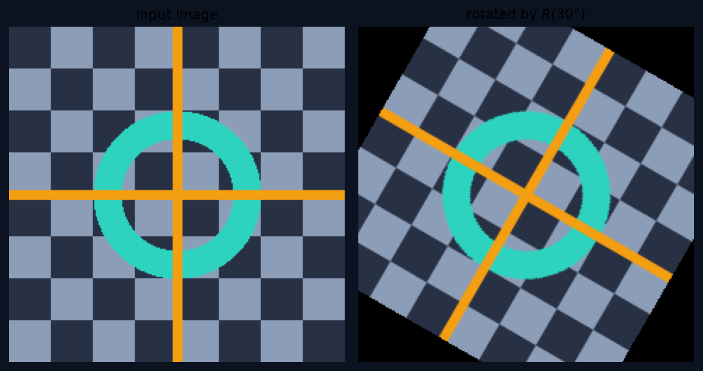

数学工具箱 · 01
线性代数够用就行
向量 · 矩阵 · 三种乘法理解 —— 这一集补齐全书的地基
WHY · 为什么需要它
图像就是一大片数字
所有图像操作，都是对这片数字做同一类运算。
主角一 · VECTOR
向量：带方向的箭头
最直观的样子：「向右三步，再向上两步」。
图像里一个 5×5 的小块展开，就是一个 25 维向量——维度高一点而已，一点都不神秘。
主角一 · VECTOR
向量只会两件事
加法
箭头首尾相接先走 a，再走 b，等于直接走 a+b
数乘
把箭头拉长、缩短或反向2a 就是走两遍；−1·a 就是掉头
复杂操作，全由这两件小事堆出来。
主角二 · DOT PRODUCT
点积：你们俩有多合拍？
两个向量做点积，答案是一个数：方向越一致，值越大；互相垂直，等于零；方向相反，是负数。
主角二 · DOT PRODUCT
点积的视觉伏笔
两个图像小块各拉直成 25 维向量，点积越大，长得越像。
第 7 章
特征匹配判断两个小块像不像，核心就是比点积
第 5 章
神经网络神经元的核心一步，也是一次加权点积
主角三 · MATRIX
“
矩阵，就是空间的「线性」动作。
不是死的数据——是一个还没按下去的按钮。
矩阵 × 向量 · RULE
规则只有一条
「行点积」是入门必须会的手工算法。但真正让你看透它的，是下一页的另一个角度。
矩阵 × 向量 · 心脏
列的加权混合
旋转、投影、坐标变换，全是这句话的不同戏服。
马上能用 · ROTATE 30°
一个旋转矩阵长这样
几分钟后，你会在代码里亲手做这件事。
一个短板 · TRANSLATE
旋转矩阵搞不定平移
旋转是乘法，平移是加法：\(R\mathbf{x} + \mathbf{t}\)——两件事不合拍，公式马上变丑。
下一集教你一个漂亮的魔术：齐次坐标（homogeneous coordinates），给向量加一个「1」，让平移也变成乘法。
钉死符号 · NOTATION
三个必记符号
\(I\)
单位矩阵乘谁都等于没乘，空间的「不动动作」
\(A^{-1}\)
逆矩阵满足 \(A^{-1}A = I\)：动作可以被撤销
\(\|\mathbf{x}\|\)
向量范数箭头的长度，误差的尺子
以后所有「误差」的度量，都是真值减预测值，再取范数——最小二乘（E034）的地基。
对照原书 · APPENDIX A
附录 A 在等你
别被 SVD 吓到：它做的事，无非是把一个复杂动作拆成一串最简单的动作——学完这一集，它手里的每个零件你都认识了。
动手 · CODE
实验：手写旋转矩阵
全部只靠 NumPy 手搓，不调任何现成的旋转函数。
实验结果 · OUTPUT
你刚刚用矩阵转动了空间

左：原图 ｜ 右：旋转矩阵 R(30°) 作用后的结果（本集代码实跑输出）
易错点 · PITFALL
矩阵乘法不满足交换律
几何动作的顺序，必须像做菜一样严格遵守。
收个尾 · RECAP
带走两句话
记忆锚
矩阵，就是空间的线性动作原点不动，直线不弯
心脏
矩阵乘向量 = 列的加权混合按 x 的分量当配方，混 A 的每一列原料
NEXT · 回书指路
读原书附录 A 开篇（原书第 920–921 页），试试看懂 A.1 在说什么
作业跑通 code/rotate_demo.py，把旋转角改成 −45° 再看结果
下一集E002 齐次坐标：让「平移」也变成乘法